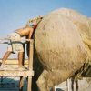

|  |
Blogging is my business! | |
|
|
2008! And the miracle of Aden. My miracle, no-one else was involved. Click here for blog 2007 31st Dec 2008 On this last day of 2008 I'd just like to say why hell do I feel ill at this time of year again? It really isn't on. However, I shall be a hero and look after my children while the admin assistant fumbles around. Incapable of even looking after himself. So, please have a good time without me tonight. Have a drink and toast my good name, as usual. I shall think of you when you the time comes and you can praise me in glorious celebration once again. I will lead you, my precious fans through these times of financial woe. My tip for 2009 is this: remember to keep some money for my birthday and Christmas presents. Happy New Year when the time comes!! 30th Dec 2008 It was beautiful and clear this evening so I thought I'd show Kaelan the stars. You know, stars like in the poem "Twinkle Twinkle", not stars of the human kind. He sees one of them everyday. We were looking up in awe, and I asked him (rhetorically) did he know where the stars came from? His speach is developing quickly, but I am unsure of how to interpret his answer: "howdivakenthatamnoeventwaeeerthieejitroondhere" ?? It sounded suspiciously hobbit like. 29th Dec 2008 Still returns to the Epsom farm. The hobbits have vacated. Nancy was upset to leave me, as can be expected. Sidney looked a bit fatter, thats all. Kaelan has done some developing lately. He can now say "please" instead of "plea" (The "s" sound was a big obstacle for him). He can accurately describe objects as little or big. He can eat his breakfast independantly and without making (much) mess. He also needs a haircut. I haven't taken him for one yet. Luckily Aden's hair is a bit thicker, though it is a bit patchy. Kaelan can also say "one, two, three"! Does he know what numbers are? I think he does, since if you ask him if he would he like one grape or three, he always holds up five fingers!! 27th Dec 2008 Chilly day here in Epsom. I have tried to explain the technical difference between frost and snow to Kaelan but I am unsure he understands. Snow is what he knows and snow is what it is! Went to see SOF today. The journey there went swimmingly, under 1 hour from door to door. Here are some photos. Coming back took two and half hours. Oh what an ordeal! Though Nancy did well. Having two hungry booboos in the back of a car is not pleasant. However, like a real life action hero, she jumped into and out of the car (while it was moving!), running between shops, trying to buy baby food. She was on a mission. She was like a member of the SAS darting between doors on a suicide operation. Then, once she had accomplished her task she lept back into the car through the window. I was quite astonished. Meanwhile, Sid and the admin assistant were following in the admin assistant's rust bucket a few cars behind, completely oblivious to Nancy's heroics. 26th Dec 2008 The admin assistant involved himself with my family and constructed a toy which Aunt Polly had shipped from Hobawick. The kids really love it: photos. 25th Dec 2008 Not even 12 o'clock and I am exhausted: photos. Santa left so many presents it has taken all morning to open them. Phew. Aden seems to have a technique to opening presents. First he dribbles on the paper to soften it up then tears it. Kaelan has been running from one side of the room to the other very excitedly. It is all go in Epsom today! And of course, thank you for all your pressies and warm wishes. I will respond to you all, once I have time. Realistically I am too busy to reply, but I will think a kind thought for you... Merry Christmas! Now, I will oversee the maid, while she is making Christmas dinner. Christmas dinner: photos. After we had luncheoned, I did the traditional thing and tuned into the Queens speach. I listened to her wisdom with an unquestioning mind. She is the Queen after all. However, due to her refined accent, I am unsure the hobbits followed what She said. "whaedizshethinksheez" and "sheezfuloersellsosheez" were all the hobbits could murmer. photos. Today has been a good day, but I have missed my boys. My darling Nero and Pasha. I find it very hard when they are not here at times like this. They were always here. My original booboos. 23rd Dec 2008 Two days to go!! Went shopping today. Shopping makes me happy. I think sleeping makes the hobbits happy. Especially Sidney. It almost feels like I have 3 children in the house at them moment. In fact, I think Kaelan and Aden sleep less than Sid. Though the senior hobbit has been pulling his weight a bit more this visit. I think I have counted three sh*tty nappies he has helped with during this stay. However, changing channels on the TV can be a challenge for Nancy: "howdivaturnthitellee". She whines, waving the remote control in front of my face until I randomly chose another channel. This appeases her for while, then she is back. Perhaps I should revise the number of children to 4. Then they start fighting: "dinnidaethateernoinchaergeothezappirgeeithere". I assume the argument is something to do with which channel they are watching, since they are trying to tug the remote control out of each others paws. The translation team have almost given up. They have no idea where to start when it comes to deciphering these creatures verbal habits. Some of the most talented of the team are desperately trying to find their Rosetta Stone. However, what are these idiotic creatures liable to be saying? Is it really worth us knowing? "eevyasedthilastothibogroll", "eelhetibrikitsbacktigetitdoonwithootfluddinthihoos". Do we really want to know what could be pushing these animalistic minds into the act of speach? However, perhaps it would be useful to know what the hobbits are saying. Perhaps they could provide an insight into the formulation of belief systems and abstract notions of the world that could explain how our primitive cousins developed language and culture. So what does "amganfuracrap" really mean? Come on translation team, keep your peckers up! 22nd Dec 2008 Aden's first Christmas is going to be very special. He will have me and Kaelan to show him the ropes. We will help him open his presents and play with his toys. Then we will play charades and have a merry time before retiring to bed on the 25th. One thing concerns me though, how do I hide the hobbit drool and debauchery of their eating antics at the Christmas dinner table? I fear my children will be scared witless by the elbows and feet flying during the meal. The hobbits are so rough when they have a turkey sitting in front of them, and are filled with alcohol. I remember last year in Hobawick, they were bearing their teeth at each other before the meal started! Luckily Nero was sitting next to me. When he growled, the hobbits made whimpering noises and scuttled off into the corners of the room. I felt quite safe. This year, there is no Nero. I have Ruuskii of course but I am unsure if he can contend with the animal fervour that comes over these little hairy oiks. Poor Nero, poor Pasha. Little did I know that one year ago would be their last Christmas here on Earth. How I miss them. I feel they are with me though. Perhaps not physically but definitely in their caring presence. Nero would defend me against a hundred 100 tigers and Pasha would box a fox for me. But you know, realistically, the hobbits are so debauched they are more like jellied farts than a threat. They lollip from one reclining position to another. Moaning and groaning like expectant hippos. After a meal, vague sentence like noises squeeze from their mouths: "ohamritexausteedmie", "eerpuggledsoeeer", "thisbaitsworkin" are just a few of their semantic burps that no one listens to or acknowledges. Ah, the life of a hobbit is an easy one. As for me, I have things to do. To prepare! To make a great day!! I will update you on my progress, while the hobbits snooze. 21st Dec 2008 Sidney has been making an effort, though I would not like to say it is a satisfactory effort. At the moment, though, he is on the right side of the law. Lets hope it stays that way. Here are his utterings on his conduct so far: "amjisootohospitalamnomasell" I have the translation team working on this witter as we speak. Anyway, here are some photos. Also, what chance would Alexandra have had if we had been been in the X-Factor? Here is evidence that she would have had none: The Clifford Sisters. 20th Dec 2008 A rushed charter has been draughted and signed. They arrived today. Without warning. Even though I was on high alert due to the time of year, they sneaked over the fence and started climbing up the drain pipes. Then Ruuskii warned me. Oh dear, oh dear. Lawyers are so expensive at short notice. But so worth it. Sidney signed, as witnessed by us all. I warn thee now, oh Sidney Hobbit. Cross me and ye shall feel my festive wrath. 19th Dec 2008 Aunt Kaza has spoken: I think one word best describes my stay in Epsom for all those who had the pleasure of coming in contact with me: INSPIRATIONAL!!!!! I totally "wowed" everyone at the mother and baby groups and I'm pleased to announce that the fabulous Clifford Sisters were reunited for an amazing rendition of "Valerie". In fact, the camera crew said that only difference between us and the X factor winner was that we had talent! The babies are totally gorgeous - such a big love story between me and Kalean. It's all sorted. He's coming to Malta next year, I just have to master how to manouvre that damn pushchair. Poor admin assistant still being worked to death. He's up at the crack of dawn, bathing, feeding and dressing the babies. In fact, Aden bears an uncanny resemblance to him when he was a baby! Astrid occasionally swanned in and out usually to turn up the volume on the TV or give orders. All in all, everyone had a wonderful time.and I enjoyed myself too! Will be back again very soon so start practising your chicken surprise Cock! And recharge the batteries on the vidcam. Next time..., a Wham medley! Aunt Kaza Some pics. I don't know which is more worrying, Kaelans apparent affection for AK or his geek streak... photos. 19th Dec 2008 Still haven't received the description of her stay in Epsom from my sister. Also, I am sure the hobbits said something about coming down for Christmas, but no sign of them yet. 17th Dec 2008 One day, a crazy English womain who lives in Malta had a problem with her PC. She was sitting at her computer trying to get onto the internet but unable to. She was contemplating calling the company that provided her internet connection to complain but she dreaded calling them. She felt the customer support engineers always laughed at her and her lack of knowledge. However, after about an hour of clicking "Send/Receive" in Outlook, she bit the bullet and phone them:
dring dring...dring dring...
[phone picked up]
Hello, XXXX here, your friendly Maltese customer support engineer.
How can I help you?
[rant]
Your service isn't working again!! I have a problem with the service
you provide...
[calm]
OK, could explain the problem pls?
[rant continues...]
...IT NEVER WORKS AND YOU JUST LAUGH AT ME... [sob]
[calm]
OK, could you close all your Windows pls?
[bemused delay]
All my windows are closed. The back door is open for my cats though.
[calm - with smile on face]
OK, can you see your Desktop?
[bemused irritaion]
I don't have a desktop. My PC is on my coffee table!
[calm - but starting to laugh and unable to hide it]
What error are you receiving?
[still bemused but with purpose now]
Outlook won't connect.
[..sigh..]
Untick "Work Offline".
[happy surprise]
Thats it!! ITS WORKING NOW. YOU ARE A GENIUS!!
[sound of chair falling to its side and the snap of a taught rope.
A gurgle or two, then silence]
[still happy]
Hello, hello? Oh I think he's hung up.
That is a true story. Word for word. My sister is amazing. My sympathies to the family of the customer engineer. He was a good man but just wasn't prepared for the level of idiocy that some people can stoop to. Also, I am expecting her to write a few lines about her stay at the Epsom farm and seeing my wonderful children. 14th Dec 2008 I spoke too soon. Aunt Kaza arrives today. I am going to give my Stilton and biscuits to a neighbour to look after. She is a gannet once she gets going. Good. She doesn't seem too spaced out. Perhaps she is cleaning up her act. 11th Dec 2008 I have a little king. Aunt Kaza is continually requesting vids of my Booboos. If she really cared, she would come over to see them sometime. 7th Dec 2008 I decided to humour the admin assistant (and his geeky friends). The admin assistant was very pleased with himself after passing an exam on Friday so I thought I would show him who has the real talent round here. See the vid! I expect it will get international acclaim. (here is a less compressed version, approx 3.4MB) For those of you who are sad enough and want to know, CCNA stands for Certified Cisco Network Associate. There are other acronyms in my "techy" version of the Village People classic but they are really not very interesting. However, I know you will ask, so here they are: LAN = Local Area Network, WAN = Wide Area Network, MAN = Metropolitan Area Network. Enjoy!!! 6th Dec 2008 Importantly, here is a vid of Aden standing. It is the Vid team you can hear wittering in the background. Of lesser importance, happy birthday to The Sidney Hobbit! You old hobbitroid you! 5th Dec 2008 My delusional sister is at it again. First she says she has had a steamy affair with him! Now she thinks she went to school with Suzy Brannon from East Enders. When will this fantasy stop??? 2nd Dec 2008 A visit to Santa. I am expecting a white Christmas. So are Kaelan and Aden. Do not let us down Santa!! Actually, who controls the weather at Christmas? Perhaps it is Rudolph. 30th Nov 2008 Kaelan points out things of interest to Ruuskii but I am unsure if Ruuskii appreciates Kaelan's eye. Can you spot the baby? That is Aden chomping and quite oblivious to the world. 28th Nov 2008
Aden can, with great peril, stand while holding onto something. Everyone, even Ruuskii, holds thier breath while watching. Not that I'm pushing him or anything but he will have to get up to speed quickly. I'm busy, busy; preparing for Christmas. 25th Nov 2008 I have quite a few Christmas trees around the farm. This is one of the lesser ones. 23rd Nov 2008 Dodgy geeza in period costume on the run: photo. Beware! Snow: photo. Again! Booboo2 vid. 22nd Nov 2008 It's that time of year again. I find putting up my christmas tree a bit tricky: photos. However, that idiot the admin assistant can infrequently do something useful: photos. But the boys are the best of all: photos. 15th Nov 2008 The Epsom farm had some visitors today: photos. And one from the downs. I have redesigned the pram. You may notice. 12th Nov 2008 A booboo photo. 11th Nov 2008 Mr O asked for my advice an the current world financial situation. My policies will be in place by next Friday. I may not have died for country but I think I should be remembered while I am alive. May talk to queenie today, get her to add another minutes silence to the two already there. 2 for the dead, 1 for me. 10th Nov 2008 Aden wobbled in a sitting position today. Rather precariously but the first steps at sitting I'd say. 4 months, and he is developing fast.
8th Nov 2008 Here is a selection of photos of my growing family. 6th Nov 2008 Had a telephone call from Mr Obama last night congratulating me on my message. He is sweet. 5th Nov 2008 I have a message for Mr Obama: Congratulations and welcome to the world of International Statemanship. It is a tricky job but with the right team around you, you can do it. (Don't hire idiots). Your black achievment is without compare (apart from mine as a woman). May you reign as an example to your fellows as I have to done my ladies. Together we ARE inspirational and together we can lead this world on. We have special relationship and I'm sure Mr Obama will be in touch. We have much to discuss!! 03rd Nov 2008
Here is my report on Aden: cute, cute, cute!!! 1st Nov 2008 I instructed the admin assistant to do some scanning: 29th Oct 2008 Snow in Epsom this morn. Photos. 28th Oct 2008 Yesterday was a very sad day; Pasha died. He had started to suffer due to his kidney condition he picked up in Febuary. It breaks my heart to have lost both my boys this year, we made the perfect family. Goodbye Pashee, I will never stop loving you. Now you can be with your brother Mr Nero. Now he can look after you, like he did down here... 26th Oct 2008 Obviously some photos are more important than others. This photo is immeasurably more important than any containing the admin assistant. I purchased a buggy board for Kaelan. He took to it like a duck to water. 25th Oct 2008 Naturally, Nancy had aspirations for her offspring. So much so she even organised a photo shoot for them. Unfortunately hobbits don't very often make it into modelling. In fact I have never seen one scuttling along a catwalk. Legs too short you see. 24th Oct 2008 I don't think a set of photos that have appeared on IMUPMYASS.COM have created such a commotion! Every one had something to say about Sid'n'Nancys wedding. "More", they shout, "More!". Soon perhaps, soon. In the mean time, my booboos
21st Oct 2008 THE Hobbit event of 1967: Sid'n'Nancy's wedding! 19th Oct 2008 I present to you: Sidney Hobbit! Nana Nancy to follow soon! Then Aunt Kaza of course. Though I am not sure where to find photos of her? Perhaps she could send me some. 18th Oct 2008 Kaelan with plane. 15th Oct 2008 I'm scared. I'm so beautiful. I could make the world stop. Kaelan and Aden are growing quickly. Here are some recent photos. 40 isn't so old. I don't know what Aunt Polly is worried about! Not that I know. I only recently turned 30. Think I can feel a poem coming on:
Looking upwards, I can see the sky. But things are in the way. They are the branches of my life. Spiralling up-away. The blueist hue is peeking through. Leaves and wood are in between. Alive and dead, not fallen yet. Down to where I lean. Surrounded by the growing grasses, That feel the summer sun. How lucky I am, To still have a gorgeous bum. Pasha is not well. The poor thing is struggling a bit. 06th Oct 2008
05th Oct 2008 Oh so busy. However I always make time for some holidays. Had a call from an old friend saying she was going up to the Lakes for a week. Thought I'd take the kids along for the ride just to show them that England is more beautiful than anywhere else on the planet (esp Scotland). Here are the photos. I was just getting to like the Lakes when the admin assistant drugged me and drove me up to Scotland and to Hobawick. I was furious when I awoke but the happy Hobbits persuaded me to stay. Photos. Kaelan has a fascination with tractors at the moment. Luckily for the admin assistant he knew a family member who has a collection. Photos. Pasha is not keeping too well at the moment. 24th Sep 2008 Oh so busy. However I always make time for some photos. 21st Sep 2008 My, how I feel sorry for the elderly. Went to Div's 50th birthday party yesterday. How he wobbled round the dance floor. Lucky me, I have another 20 years before I get that ancient! Photos. Me and some Orpers danced the night away, exhibiting our youthful flowing prowess. We gave quite a show! Drove to Hampshire today, to Marwell Zoo. You know I could drive and drive. I love driving. Though the kids do start to moan, as does that admin assistant. 2 hours, 4, 6, infact I wish there were more hours in the day so I could just keep on driving!! Photos. 20th Sep 2008 Went on trip to Kingston and Richmond Park today. Saw some deers (red and fallow), swans, ducks, moor hens, squirrels, tourists and trees. Photos. Everyone coo's over Aden just the same as they did when Kaelan was a little baby. Pasha is at the vets at the moment, he is on a drip. He hasn't been a 100% over the last few days. The vet thinks his kidneys could be playing up. Get well soon little Paash. 19th Sep 2008 Life is a mysterious thing. To the thick out there. I, however, know much more. Nigh on everything. So, whether you are 6 months or 60 years, listen with keen intent. Deep, deep, deep things will come to the surface. So does shit. 14th Sep 2008 The exciting people at Chessington invite me along to their World of Aventures all the time. Occaisionally I feel obliged: photos. If Epsom is 9 then Chessington is 3 and Orpy, dear old Orpy, is 10. I can feel a wind of change coming. Greater then breeze but not a strong as hurricane. 13th Sep 2008 12th Sep 2008 Will Aden and Kaelan remember going for walks on Epsom Downs? I am unsure, they are both very young and at this stage and I think they will only remember me. ...and Ruuskii perhaps. I hope they remember Ruuskii running around and being happy. Chasing unsuspecting dogs and sitting where he feels appropriate. My only regret is I don't think either of them will remember Nero. I wish they could, but apparently that is unlikely for Aden, since he wasn't born when Nero was around. But Kaelan speaks as though Nero was here only yesterday! Nero this, and Nero that! Every thing is "Nero", or is it "gero" or "dido" or "deedo"? Oh I do not know. Kaelan is speaking in a more and more complex code that I think only he and the wallpaper understand. Aden only has eyes for me. 10th Sep 2008 Aden is sleeping longer during the night. Almost till a decent hour. In the evening Kaelan is creative. 7th Sep 2008 Pasha is very tolerant. 4th Sep 2008 Aden's childminder report for today.
31st Aug 2008 27th Aug 2008 25th Aug 2008 24th Aug 2008 Aden has quality. He gave the admin assistant a sardonic smile today. The idiot admin assistant thought it was genuine. Also went to Chessington World of Adventures. Kaelan wasn't very happy when his first carousel ride finished. Photos. 23rd Aug 2008 21st Aug 2008 19th Aug 2008 16th Aug 2008 15th Aug 2008 13th Aug 2008 12th Aug 2008 Moza in London 10th Aug 2008 Sidney never learns. He didn't share his take-away "chinkee" on Friday evening. The results of this selfishness were predictable... 8th Aug 2008 6th Aug 2008 My sister has been hacking into my site again and writing gobalde^'#-.?.-#'^k. 5th Aug 2008 3rd Aug 2008 1st Aug 2008 30th July 2008 27th July 2008 26th July 2008 25th July 2008 23rd July 2008 Chessington on Monday and Epsom today. 19th July 2008 18th July 2008 Kaelan and bros. One big happy family. Though Ruuskii is having some adjustment problems. 16th July 2008 Nonsuch park today: photos (and a couple from day 1). 15th July 2008 Being a double mum means I'm kept vbusy all the time but I take it all in my worldly stride. Aden is filling out a bit now. He loves my Kilroy, can't get enough of it. Kaelan is getting to the point where he is running (and falling) quite successfully. 14th July 2008 These photos were taken less than a minute apart at approx 3pm today! I like to keep you up-to-date. 13th July 2008 Went to Nonsuch park today. Vnice day for it. Ruuskii excelled himself. He was defending the pram from marauding dogs very well. Sidney Hobbit wrang today, asking about Aden. I do hope Sidney and Nancy don't think the admin assistant had anything to do with Aden. Aden is a miracle of me! He was conceived, gestated, and delivered all in 1.5hours. That idiot had nothing to do with it! 12th July 2008 A new baby neccesitated a new pram. Ruuskii was very excited to see Aden yesterday. I had Aden in my arms but Ruuskii was jumping up, almost standing on his hind legs, gently trying to see and smell Aden. Of course, Kaelan will have to tell Aden about Nero when they are both a bit older but Nero will still be Aden's guardian angel until then. 11th July 2008 I am a slighty tired so here are some photos of Aden. I will continue my amazing thoughts tomorrow... once I am rested. 10th July 2008 My! How the roulette wheel of fate spins! Sid has been in hospital for a couple of days with an infection not too disimilar to Kaelan's. He has been on oxygen and an antibiotic intravenous drip. Nana Nancy called up last night to let us know. Fortunately, she wasn't that bothered and seemed to be enjoying the break. Anyway, he seems to be making progress... On to more important matters! The puppy is arriving today! Yipee. It is getting dropped off at 3pm. Can't wait. I have been waiting a week for it already. The breeders have been fobbing me of with excuses about it not wanting to leave its mummy! Selfish things, they just want to keep him for themselves!
At 8am this morning (just after previous post) I decided to not get the puppy but have a baby instead. I felt that it was unfair to take the puppy away from its mummy and owners since they seemed so happy with it. Once I had made my mind up it was a simple process of deciding what kind of baby I wanted; dark hair, gender (male of course!), cute (like Kaelan), between 8-9lbs, etc. When I had finished deciding I just went to the hospital and out it popped. So baby Aden was born at 9:40am in the Kingston Hospital. A true miracle of me. He weighs in at 8lbs 10oz and amazingly looks like Kaelan when he was born. He has supped his first milk, had a little snooze and deposited his first tar. Kaelan has not met Aden yet. I put him in the care of the child minder since he is not too keen on hospitals. Kaelan will meet Aden today, I do hope they get on. UPDATE: Kaelan was slighly bemused by Aden at first but after a while he was stroking his head and prodding his eyes like he does to Ruuskii. So everything is fine (I hope). 8th July 2008 Kaelan's language development has faltered, I feel. Everything is a "gock". Everything that isn't a word he knows, that is. The admin assistant has failed. He is trying to come up with ideas with what to do with dirty nappies. I am glorious and a perfect mother. Patient to the last!! 6th July 2008 The 6th day of the 7th month of the 8th year. Today has a bit of ring to it, don't you think? The rules of tennis are complicated, don't you find? These people playing tennis are doing things with numbers that I've never seen anyone attempt in the bank. Also, what's all this juice about? Anyway, to more important matters. That tadpole I was telling you about is still in the pond! I am getting slightly anxious about it. Perhaps I should try and assist it. I mean, how long can it stay a tadpole? Also, Ruuskii nearly got nipped today. By a big Alsation. It would have served him right to be honest. Nero wouldn't stand for any nonsense from Ruuskii, so why should anyone else? 4th July 2008 The Tits have also flown the nest. Aah, it reminds so much of Kaelan. All the Spring babies making their new way in the world. I can feel a poem coming on.
Till next spring, and to all the new life it will bring... 3rd July 2008 When I went to pond today, there was only one tadpole swimming around. All the others had scarpered. But I suppose they had to leave their pond at some point! We all do. The little puppy will be getting weened from its mummy now. When it arrives I am sure I will see Nero's eyes and start crying... But then I will be happy for it, because I will be its new mummy. And it will be happy to meet me, like every one else is. Kaelans latest word is "keys". Though to the unitiated it might seem as though he is trying to spit, it is in fact his attempt a the english language. I am so proud of him. 29th June 2008 My stomach has expanded so much my belly button has popped. It is so big it is causing me to be lop-sided. I wobble now and again. To the point where I almost fall over. I may need some balast at the rear, but in saying that I've got my ass! Though it is not expanding at the same rate as my belly. Oh what is going on with my body? Kaelan discovered his tongue today. Also, the admin assistant passed an exam today but of what consequence that is, I have no idea. 26th June 2008 Kaelan on his swing. I'm sure Kaelan could be a tennis player, Wimbledon beckons. If not, I'm sure there could be a good tennis player inside me! Just need to get practising. 25th June 2008
You know, feeling very excited at the mo. My stomach feels as though it has butterflies. Something is brewing. Also, I have noticed ruuskii is attempting to bonk more and more. Generally it is dogs he is trying to do, but once it was a non-dog; as Jiminy can attest to!! I hope ruuskii realises the implications of his actions.
22nd June 2008 Just read the handwritten card I received from my sister. I think she was spaced when she wrote it: Happy Birthday Sister Have a lovely day and enjoy all that you do. Birthdays are special and you are special too, so here's a very special wish for a beautiful day. And when your birthday is over remember the love and wishes are not just for today But forever. Have A Special Day Lots of love Kaza x As I say, there are question marks surrounding the validity of the claim that she is my sister. That is all I have to hold on to. 21st June 2008 Once again thank you for all the kind wishes you sent yesterday. You really did excel yourself, though please push yourselves harder next year.
Hand painting is for babies! Kaelan is a little boy now. 20th June 2008 Thankyou, thankyou, thankyou all for the wonderful cards and lovely messages you have sent me. It makes me so happy to know that my birthday brings so much joy to every corner of the world. However, this year is the first year without Nero, so my heart is tinged with sadness. But I will still save him some cake! In fact he can have the one the hobbits sent, it looks as though it was made out of dog food (or is it mud?). Also, on this special day I'd like to give thanks to all the doctors and nurses who looked after Kaelan when he wasn't well. He seems to be doing fine. His cheekiness levels are rising every day. And another good thing to look forward to..... the new puppy!!! It will soon be six weeks old and will be able to leave its mummy. Yipee!! 17th June 2008 It is not good when you are on firstname terms with the receptionists at AnE. I had to go today, I had a tremendous pain in my left shoulder this morning and thought I was going to pass out. Even after a couple of stiff whiskys, the pain wouldn't abate so in the end I thought it best the driver take me to Epsom Hospital. I was checked over by an army of doctors and nurses and they wanted to keep me in overnight but the room I was in wasn't up to scratch so I signed myself out. Bombastic me? Just don't forget my pressies. 16th June 2008 Mid-summer almost here again. More importantly, my birthday is upon us again. Soon!! Fingers out pls and send cards and pressies to normal address. 15th June 2008 Happy Fathers day Sid!! 10th June 2008 My statistics team came back with an insightful report today. It shows how much commotion the hobbits caused during their stay and gives an explaination for my extreme exhaustion:
Stats never lie. You see what I have been through! Me and my poor booboo. 9th June 2008 Oh, I think all the commotion of the last few days has been too much. Hobbits have gone. Kaelan has slept all day, as have I. I'm sure I am more exhausted than I should be. I can't be getting old, after all I'm only 32! Puppy arrives soon, I'm sure that will perk me up. P.S. Don't forget how special this month is... cards and pressies are to be here by mid June, thanks. 8th June 2008 Oh what a fantastic day! The Derby was venjoyable even though I didn't have a winner. The Downs were buzzing with helicopters, stars (me included), royalty (me included) and some vbeautiful horses. As can be expected I had a prime spot for viewing the days events, right next to the finishing post, it had a marvelous view of the home stretch. Lydia had a good run with the book makers which made her very happy, as can be expected. The squeals of delight could be heard all over the Downs. Jiminy got into trouble for betting with money that wasn't his own! Tut tut. Nancy got drunk, to the point where she couldn't stand up. Sid lost all his money. Aparently this is his normal when it comes to Sid and horse racing. Kaelan slept through the big event. I think he is exhausted after having the hobbits here for a few days. I was graceful and signed autographs with dignity and regality. The admin assistant wittered. Also, can anyone translate: "ITWUZBAITBEEASSNOTTUR"? Jiminy roared this at the end of races quite often, however it has my transaltion team baffled. 7th June 2008 Oh. I have a sore head. The hobbits arrived 2 days ago. I knew they were going to cause mayhem when they arrived. Let me explain, in general I do not drink very much alcohol but these creatures have obviously been practicing for a long time. They have been quite forcefully plying me with drink. They are animals once they get going. Often it can get to the stage where their antics are quite obscene. Lydia is a heller. Jiminy is a perpetrator of wickedness. And as for Sid and Nancy they are going their ends. The whailing, howling and screeching didn't stop last night. I was unsure what to make of it at first but I think in their strange way they were having fun. At least I think they were tears of laughter I saw but I almost called the police due the levels of debauchery. Where are you Nero? My protector. At some points they were lashing the liquid down their gullets so fast, it was like they had just been rescued after being at sea for six weeks. Today is annual running of the Derby Stakes. I am quite worried how it will all finish. I expect to be found in a ditch on the Downs tomorrow morning. Oh dear. 4th June 2008 I spoke too soon. A letter from Nancy Hobbit arrived this morning (they don't have telephones or email so far up north). She is coming down for the Derby, Sid is in tow, as is one of her friends. I can't make out from her handwriting what her friend is called, perhaps Lydia or Cindy, with a surname of Broom or Brew is it? They left their burrows one month ago and hope to be here tomorrow. Oh dear. A burrow for three, I'll instruct the gardener to get cracking. 3rd June 2008 Its the Derby this weeked. I expect the usual riff-raff will appear on the door step. Drunks, layabouts and general good-for-nothingers accumulate on or around the Downs at this time of year. As usual I will put up the barricades. Stay away! You mischief makers! I only have Ruuskii to protect me this year. He may be a lovely dog but I'm not sure where his back bone is. Nero's was made of finest steel. You know, it wouldn't surprise me if a bus load of hobbits appeared this weekend. Looking for a bed. I may get the gardener to make a little burrow for them all. At the far side of the farm. 1st June 2008 SOF and HK came round yesterday, very relaxing. We also went to see the puppy yesterday, though in the end we couldn't see it but we did hear it! Four weeks approx and I will go round and pick it up. 30th May 2008 Football is the latest craze! Though ducks are never far from his mind. 29th May 2008 Kaelan was taken to AnE yesterday evening. I noticed a strange skin condition on his right thigh/buttock and took him to the doctors immediately. The doctor was unsure what this lumpy like condition was and advised I take him to hospital straight away. The doctors at the hospital thought it was a side effect of the antibiotic injections he had recieved when he had septic arthritis. Anyway they thought it was harmless and advised I keep an eye on it. Oh, this is not easy you know. My little booboo. Hopefully when the new puppy arrives things will get back to normal. Not having Nero around is still very upsetting. Poor noonoo. 26th May 2008 Kaelan makes quite a few different noises and definitely believes he is speaking sense (much like the admin assistant!) however, I can only make out what these three words mean: Mama = I want Duckduck = Duck Go = Ball Mama may mean mummy as well, but I am unsure. 24th May 2008 I am such a butthead. I delete videos from the camera that I really want to keep before I copy them to them PC! Only photos available today. Sorry everyone, but I am a real numbskull. Yes I really mean me, Ass. 23rd May 2008 The tadpoles are gaining legs. The newt tadpoles that is. We have different kinds of tadpoles. Newt ones and frog ones. The frog ones are a bit behind. They are smaller and invisibly dark. The heron used to enjoy them, until he ate them. The frog ones that is. Until things became 50/50. Now he has stopped. Initially they were 90/10. If not less! Now I would say things are 50/50, definitely. You see, nature has different ways of doing things. Mass and select. I am select of course. As is Kaelan. Things mass should not have been born. Or at least less frequently, I'd suggest. Then, to finish, of course, Nero was select. The MOST select. I hope he is ok. 21st May 2008 Kaelan is almost back to where he was just over 3 weeks ago in terms of walking. Not quite as proficient but I am hoping in one week he will be back to the same point. I will be very grateful if he is. At the bleakest moments I was unsure of anything. One of the Epsom mother's children has tonsilitis. I thought "...how quaint" when I heard. If only she knew what a proper illness was about! However, I hope they never have to go through the same ordeal that me and booboo went through. It was really quite dreadful. Oh, did you read the headlines today? "Men are not required". Too true. It is now official, legal and signed off. We don't need'em to have babies! Yipee!! If I were ever to consider having a second I would be quite happy doing it on my own. You know the headline should really have been: "We don't need'em, FULL STOP!!" Kealan's puppy will be just about getting ready to come out now, any day. We will pick him up in 6 weeks approx. 19th May 2008 Ducks, ducks, ducks. Everything is ducks at the moment. 18th May 2008 What the hell!! My web site has been hacked! Who put up that post yesterday? My Sister? No way, she doesn't even know what a computer is never mind send an email, never mind hacking in to my web site! IMUPMYASS defaced with drivel and fabricated flatulence! Well I never. What is it with my sisters fascination with making things up about me? I really don't know. One day I'll write a page about her shinanigans. Anyway, did you see the picture of the German Shepard taking a bite out of that criminal at football match? Nice nip. I thoroughly condone the use of Nero and his brothers and sisters to keep the criminal masses under control. 17th May 2008 It was very nice to see Astrid, Kaelan and the admin assistant in Malta, but they did harp on and on about me changing a nappy. So, I thought I would write a little something about Astrid's early years, just to set the record straight. I was 3 years old and fast asleep. Suddenly, I was awakened by an ear-shattering "neighhhhhhhh" from the next room. Astrid was born at home and entered the world thinking she was a horse. She remained under that delusion until she was 18. Mummy had to be taken to hospital and Astrid was left under the care of my father who was instructed to give her sugar water every 3 hours. I remember sitting on the stairs, peaking through the banisters, terrified of this tiny thing with masses of black hair lying in her cot. My father tried to entice me to enter the room but every time I tip-toed closer, she'd let out an ear-splitting neighhhhhhh and I'd run for cover. By the age of about 5, her horse persona had split and sometimes she thought she was a dog. She alternated between 'horse days' and 'dog days'. On 'dog days' she would scamper up and down the stairs on all fours - barking and cocking her leg against the chair legs. Her food had to be minced and she'd lap it up like a dog from a bowl on the hall floor. On 'horse days' she'd gallop around the hours, neighing and baying and stomping her hooves. On 'horse days' she would eat he food form a nose bag (made by myself from a black bin liner) which she hung round her neck. Whether having a 'horse day' or a 'dog day', she was extremely annoying. She refused to play like other children. My Shakespearean talent as a writer was evident from an early age and whenever I wrote and staged one of my wonderful plays, I would always have to re-write the whole thing to incorporate a horse!! Or, when I organized fete in the back garden, all the other children would sell perfume that we'd made from rose petals or baked cakes or something....normal! But Astrid would sell sugar lumps which the visitors then had to feed her - if they didn't she'd bite and kick them! Her equestrian identification may explain her bowl problems. As I've already described in all too vivid detail, Astrid used to poo in the bath with terrifying regularity. She was also unable to wipe her own bottom until the age of 16. This unenviable task used to fall to my mother, but on those dreadful, dreadful days when mummy was busy, this terrible duty was passed on to me. This has, of course, left irreversible psychological scars, which is why, unfortunately, until this day I am unable to change a nappy. Aunt Kaza 16th May 2008 I am unsure where I get my dancing and music talent from but I think Kaelan has inherited it. Kaelan has started enjoying music again. Come to think of it Nero could dance. And he could howl if the situation required it, or if he wanted to. As Kaelan gets older, I am sure Nero is Kaelan's real daddy. Sometimes I can see the photos of Kaelan in the womb and he does look like a puppy. 15th May 2008 Poor Nero. He will never meet Kaelan's puppy. 13th May 2008 Kaelan's mobility is improving. He is starting to stand more, and even take a few small steps whilst holding onto furniture. All good news... Here are some photos of a small present Kaelan received to help him get better. 10th May 2008 Today has been a splendid day. Lovely weather and a walk in the Nonsuch park. Venjoyable. Kaelan had a runny nose so I almost took him to hospital to get it checked out but I was talked out of it at the last minute. I am a little on edge you know, but I think the dark days are over. Phew! To celebrate I think I should get a puppy for Kaelan. Not yet, it is a bit too soon. But perhaps in a month or two. I think the start of July is a good time... 9th May 2008 He's back. Booboo is back! He's sleeping upstairs!!! Yipee!! The hospital staff did a great job and I hope they understand, but he belongs here, in our house. THANKYOU to everyone that took part in Kaelans revival. He will know what you've done later. Just now, he is too interested in squinting his eyes and shouting at the plastic duck in the pond. He came home last night. He has been a bit naughty today, but I suspect that is because he has been thoroughly spoiled. Everyone has been very worried about him, and he knows it. Though he can do no wrong in my eyes. However, If he dares cough of splutter in the next 48 hours he is going back to hospital. Infact if he coughs of splutters in the next 48 days he is going back to hospital. My booboo is back! Yipee.....!! Thankyou 8th May 2008 Poor thing. The swelling on Kaelan's left leg has almost gone. The infectection indicators in his blood have come down from 250 to 37. He is getting better. However the worry is that he has long term damage. The doctors are hopeful that he will be ok but as a convicted parent I still worry. The second operation I mentioned a few days ago was to insert 2 IV drips for the nurses to administer antibiotics. They couldn't find any more veins on my little booboo because he is too chubby. These two have stopped working now so they may have to put Kaelan in theatre again, to try and find new viens. This is all very stressfull, for both of us. Nana Nancy has been making a contribution though. She has stayed in the hospital and looked after Kaelan while I have been having a rest. She is doing a good job though the hospital staff initally thought she was here to have some speech therapy lessons. They do struggle to understand her; "eissarethairdedaethatdaeitlikethisletmeidaeitakenwhatamdain!", I'm not sure her input is truly valued. Sometimes I forget the plight of others. There are some children in Kaelans ward that are much worse off than him. Even if he doesn't fully recover (please let him recover) he will be better off than some. On the other hand some kids don't have a scratch on them. Seriously, they come in to the ward in the morning and are out by the evening. Generally they are snivelling but not much else! Nero never gave me this trouble when he was small. It has been lovely weather the last few days. The tadpoles are growing. Nero, Kaelan and Ruuskii should have been playing in the garden.... 6th May 2008 Tonight will be the fifth night for Kaelan in hospital. He has been very brave. He has been jabbed and prodded more times than he would like and unfortunately he doesn't know it is for the good of him. Hopefully one day he will understand what and why the doctors and nurses have done. I hope all this has no long lasting effects. Physically and mentally. He seems to be able to sit on a chair with out feeling pain. You can see he doesn't feel 100% when his is on all fours though. But at least he is trying to move on all fours! The emergency hobbit has been called. She arrives this evening. 4th May 2008 I am exhausted. The last 5 days have been a roller coaster ride that I would rather not have got on. Really, I do not know where to start, but more than anything, at least Kaelan is still alive. The poor little thing has been very ill, and very strong. Let me explain: Kaelan is in hospital and may be having his second operation tomorrow, the second in just a couple of days. The scarlet fever I told you about in the last blog was not contained by the penicillin. In fact, the infection had most probably progressed past the stage of where penicillin could have helped Kaelan. He has (or hopefully had) septic Arthritis. Specifically a bacterial infection of his left hip joint. Which, if left untreated, could have proven fatal. "Fatal" means dead btw. Here is a definition of septic arthritis from the ever accurate internet:
Kaelan seems to be responding to the treatment and care he has been recieving at the Queen Mary's Childrens Hospital in Carshalton (part of St Helier's Hospital in Surrey). We have found the experience difficult and at times traumatic but we have maintained extreme regality throughout (though that blubbering idiot the admin assistant has let the side down at times). I do not know who to thank more for Kaelans survival, the staff or the scientists? The staff have been exemplary, they realise who Kaelan is. However, the scientists are amazing. Through this experience I have come to realise the importance of their work. I must thank the plumbers son who realised flushing the bacteria out of a joint would aid in its recuperation. Even though Kaelan had to suffer his first operation to be cleansed in such a manner, I must say it seems to work! I also feel humbled by the inventors of antibiotics. In fact, I am unsure where modern treatment would be without them. A true life saver! I jest not. Kaelan has become a statistic of modern medical survival. One of the many millions who could (probably would) have died of their afflictions will (hopefully) survive because of the investment others have taken to look after their fellow humans. It is for this reason that now-a-days the fragility of life can give the impression of being less fragile. But how fragile it is. One day bouncing, the next, flat and punctured. Thankyou. Thankyou for giving booboo another day. Its hard to know what precisely happened. But it seems that a bacterial infection behind the ear that Kaelan contracted a week and a half ago then infected his body (exhibited by scarlet fever), then moved to his hip joint. Ultimately, the swelling of his left thigh led me to the conclusion that perhaps things had got of control. Thankfully the doctor agreed with me and an appointment was made at St Heliers. The staff got to work and have been helping booboo ever since. He is sleeping in a hospital bed as I type this but most probably going to make it through to live another day. Some more info from the net...
I think Kaelan is over the hump of this hill. I hope so. I could not take loosing him. Coming to terms with Nero is one thing. Coming to terms with Ruuskiis tick is another,.... 30th Apr 2008 Kaelan has scarlet fever. He is on penicillin, so will make it through. I hope. This is all too much; Nero, a tick on Ruuskii, now pestilence in the house. 29th Apr 2008 Went to the vets today to get a tick removed from Ruuskii. Can't be too carefull. I'm not sure what I would do if anything happened to him or Pasha. 27th Apr 2008 Went to Legoland yesterday. Photos. There is a representation of Canary Wharf at Legoland and of course the HSBC building has it Logo proudly displayed. Cannot say the same for the Citibank building. No Logo = no publicity. Idiots! I am so HSBC, and proud of it! However, I almost fell over when I saw one display. It was a view from the land of the hobbits! Aparently Christendom once reached as far north as those burrows and an abbey was built in Jedburgh. It soon fell into dis-repair, so not sure why its been included in Legoland? They'd be better off with a view of Old Orpy. Aaah, Kaelan's true homeland. Importantly, the manager of Legoland was very hospitable to the idea of having a life size model of Nero being built and placed in a prime position. Poor Nero, he would have enjoyed Legoland. 25th Apr 2008
I should have kept an hour by hour journal of Nero, when he was a puppy. 24th Apr 2008 Even though yesterday was very upsetting, it kind of helps to finalise Nero's passing. Though we still all miss you terribly. But it is coming into summer and Nero would've wanted us to enjoy all the new life that is popping up around us. Thank goodness Kaelan and everyone else is around. But that is the end of the Clifford line, when you think about it. No more kids for me. 23rd Apr 2008 Very emotional day. I received Nero's ashes. It brought memories back even more vividly. 20th Apr 2008 Going for a walk today, in the woods on the other side of Epsom where we used to take Nero. Kaelan is walking quite a bit now. Not everytime, he still uses all fours for propulsion. Took him to the swimming pool today. Of course, he did his obligatory sh*t. 18th Apr 2008 I think I need to express my inner self.
The swimming tadpoles And fighting frogs, Peddling to get round. The pidgeon flying. The free-wheeling hawk. Feathers are everywhere. From nothing to life Then life to nothing. Cycles are all around. Cycles in the garden. Cycles in the house. Cycles are everywhere. I wish I could find a way of describing Nero's life properly. Here is a vid from boxing day 2006. He is so happy and beautiful. Don't worry, I haven't forgotten about Kaelan, Ruuskii and Pasha. Nero was the centre of the house, thats all. And I haven't forgotten about my stomach either. I have no idea why it is expanding so much. 15th Apr 2008 I cooked a chicken tonight but there was only Ruuskii to give the bones to. He used to love them, his saliva would be seeping from the sides of his mouth. Then after swallowing them whole he'd lick his lips, turn round, and lie down to savour the taste. Here is a vid of Kaelan walking before going on holiday and one after the hols. 13th Apr 2008 I think going on holiday has helped a bit but nothing will be the same without Nero. I think I may rename Kaelan. It doesn't seem quite right, I shout 'Nero' and nothing happens. He would want us to continue without him, I'm sure. So I will put up some photos of our recent holiday to Malta. Even though my heart is heavy, you my fans, expect to be updated with my life events every day. 5th Apr 2008 Going to see Aunt Kaza today. Holidays won't be the same without Nero. Even though he didn't always go, he was always there when I returned. He used to groan and howl with delight when I returned. Pasha is missing him terribly, as can be expected. They have been together for all their lives. Kaelan is missing him. Nero was his cuddly teddy. Ruuskii is missing him like all dogs miss there fellow pack members. His little heart is pining for Nero. I hope we can all carry on. It is not easy. Everyday I have cried. Sid and Nancy are here to look after the Epsom farm while we are away. They were also sad to hear of Nero's passing. Goodbye Nero, we will never stop loving and missing you. 4th Apr 2008 I miss Nero so much. He was always around. He was the perfect partner. We had 14 years of being together and I will never forget his love and tenderness. Goodbye Nero. I love you so much. 2nd Apr 2008 Goodbye Nero. I cannot type. Too upset. 1st Apr 2008 I had a vision that the hobbits came down and ransacked the Epsom farm! While I was on holiday in Malta no less. I know they would do such a thing. This is no April fool, they eye up my wine collection every time they visit. 31st Mar 2008 Did I tell you I am going to Malta for a week next Saturday. To see Aunt Kaza. I hope she is not too spaced out when we arrive. I could do with her to be on her toes while we are there, I have many things I want to do. 30th Mar 2008 Vclear day today, can see from the Wembley Stadium up to Canary Warf. The Epsom farm is very well situated for a panoramic view of London. So much so, the hobbits almost wet themselves the first time they visited. Talking of which I can sense a return. If they appear, another charter will be drawn up for Sidney to adhere to. 28th Mar 2008 Here is a message for Nancy from Kaelan:
Hello Granny, My Dad is crap, he never told me about your birthday until to today! Hope you have a great time and that the old toad Sid treats you to something special. I will give you lots of hugs n kisses when I see you next. Love, Kaelan. XXX 27th Mar 2008 Kaelan has been developing a naughty streak that I can only assume comes from the hobbit side. This is an example of his naughtiness: he's forgotton Nancy's birthday! I'm sure she won't be very happy but I will wish her happy 70th for tomorrow!! And it is partly her fault anyway. 23rd Mar 2008 Going to see Papa SOF today at his parents house. He is a long standing fan and god father to Kaelan so I thought I would grace his family with our presence. Hope Kaelan behaves today. Oh and it is snowing at the Epsom farm today. Well fluttering down but not lying on the ground very deeply. Don't think I'll need to worry about drifts on the drive. Kaelan behaved, thankfully. Photos 22nd Mar 2008 Went to see S&J today. Took Kaelan back to his proper roots, in old Orpy. Went for meal at the Five Bells. Vnice indeed. Kaelan was very grumpy through it all. Not sure what is the matter with him. 21st Mar 2008 Kaelan is OK today. His rash has largely gone. So much so we went to the Llama and Apaca farm in Ashurst Wood near Grinstead. He was still a bit grumpy though. 20th Mar 2008 *NEWS FLASH* I took Kaelan to AnE this evening. I was terribly worried. I thought he 'd eaten nettles or something. He was covered in this terrible rash. Luckily my quick thinking stopped anything happening to my little boy. You have to be on your toeseez to do this parenting lark, you know! Just as well its me that looks after Kaelan and not that damn admin assistant, he's so dim witted he'd never think to take him to hospital. My baby Kaelan is ok and sleeping soundly upstairs at the moment. I'm just glad I look after him and make all the decisions. Here is Kaelans report for today.
18th Mar 2008 My belly shows no sign of submitting to my diet. What can I do to regain my sprightly early thirties physique again? Nero is slowing down some more. He struggles to walk round the house. Perhaps its time for him to be seated on his throne in heaven. 16th Mar 2008 So busy. Here are some photos. Keep on sending all that praise! I love it. 13th Mar 2008 Had to take Kalean to a different child minder yesterday since my prefered one was ill. Here are her comments:
Wed 12th March 8am - 4pm Active play: Kaelan played a game with five balls; two had shakers inside. Once he found the ball he laughed and gave it to me. Kaelan has a fabulous throw!! He Loves playing the drum and holds boths sticks well. 9.30 Banana and water. Nappy change - Poo. Big explosion. Changed his vest. Bethan arrived at 10am. Kaelan loved playing with Bethan. Loaded up the buggy at 10.15am and left for 'Wheels and Squeels' Kaelan fell asleep for 10min, woke up once inside. Played lovely, did some colouring with Bethan, played with the Brio train set. 11.30am drink water, biscuit. Sang songs both were a little tired. Home 12.15pm. Nappy change - Poo. Explosive but got there quickly. Lunch Cheese sandwich cut into fingers 1/4 apple Organix summer pudding yogurt (loved this) Big cup water Kaelan likes to share his food offering me pieces of bread and fruit. Nappy change - Poo. Left 2.30pm walked to St Martins to collect Charlie and Daniel, home in the car. P.S. If you ever need emergency cover don't hesitate to call me Kaelan was a joy to look after! We are both Joys. 12th Mar 2008 I AM PHENOMENAL!! "If only every one were as good as you, you are phenomenal!". Those were my bosses words precisely. In fact I think he said 'phenomemal' 27 times during our conversation. "I wish everyone thought like you. I wish every one was you!". I don't know why I am surprised since this is what most people experience when they deal with me anyway. But I thought my boss would be a harder nut to crack. Well, glory heaped upon me once again. Praise is one then I can never get enough of. 11th Mar 2008 Big meeting with the HSBC boss tomorrow. Got to get cracking with my project.... Not even started it. 8th Mar 2008 I really should be an important historian or something. My knowledge is truley awesome. I could also be a fantastic musician, my timing is second to none. Or I could easily be a model, for obvious reasons, or I could be a, an, anything, acutally. I am amazing. Enough about me. No matter how fantastic I am I really wish I knew what to do with Nero. He is getting on, you know. I don't want him to suffer but I don't want him to go too early either. We are best buddies. Is there a way to tell? I mean, if I really knew life was getting too much for him and I knew he didn't want to go on, I would do what I would hope he would do to me. As I say, I am pretty amazing but I guess I don't have much control over how the end of me might come about. It might get messy. If things get too bad when I am 138 years old, I hope someone will say to me would you rather be alive or dead? Hopefully I will have enough motor and cognative ability to say what I think. And if I say I'd rather not carry on, ideally there will be a humane way of extinguishing my life. But this is the paradox. If I was to get too old and out of it then I wouldn't be able to say anything and I'd live a to the end of my days as a living corpse. But if I was able to say anything I'd probably think I was doing ok and be disappointed that you wanted to kill me! Realistically, I could live to be 200 or so years old (I have a lot of things to do!!). However, I have the abiltiy to chose when Nero's time comes. So I ask you;
This is the hardest thing I will ever have to do in my life and when the time comes I hope Nero knows I will be doing it out of love. 6th Mar 2008 Wheeheeeh!! 1 year old today! What a lucky boy Kaelan is. He really knows it though. To have me in his life. Kaelan would like to thank you all for the lovely presents. 5th Mar 2008 For you who may have forgotten, it is Kaelan's first birthday tomorrow. So get cracking! Kaelan is having his birthday party today. I expect the papparazzi will be there in their hoards, so expect some photos in Hello. Photograph to be used for April Hello magazine cover! 2nd Mar 2008 Eventually made it to LZ's yesterday. L from 'ell's driving leaves nothing to be desired. Talk about wheel spins! A jolly time was had by all. Kaelan's appetite was truly amazing, he ate enough for 4 children. I was rather alarmed by what I thought was a frog fight in the pond this morning. However, I realised they were just getting frisky. Ah nature! Always a surprise around the corner. Also, as one would expect Kaelan got me a Mothers Day card. I am a truly amazing mum and fortunately Kaelan sees that. I do feel sorry for the rest of the mums in the world, especially Nancy. I mean, would you want a card from the admin assistant? No doubt that imbecile forgot. Oh well, I will wish her a happy mothers day for him. HAPPY MOTHERS DAY NANCY!! YOU REALLY DREW THE SHORT STRAW! 1st Mar 2008 Yesterdays "report".
Tomorrow I shall get my vid team to show you how Kaelans walking is developing. He won't do it unassisted yet, but only needs to hold onto one hand. Today I am going for a run in the car with L from ell. Going North (though definitely not to the Land of the Hobbits). 28th Feb 2008 Kaelan is not very considerate when it comes to the size of my stomach. 27th Feb 2008 There is a little mark on the on the lawn. I wonder where that came from? Having visitors tonight. Four in all. I am hoping they can help me work out what is going on with my stomach. I need people with vision around me. My vision. 25th Feb 2008 I used to be against the death penalty for henious crimes. Now I am less so. If we were to weigh up the odds against how many innocent get killed through incorrectly being blamed for a murder and those who might be saved through having a death penalty in place. Then perhaps we could substantiate bringing it back. Importantly I'm pro making the victims families feel better. If they want a good 'anging then let em 'ang, thats what I say. I will teach Kaelan all my wisdom. 23rd Feb 2008 The doctor was evasive. On both counts. I'm sure I would make a damn fine medical practioner for indeed it is obvious that I have trapped wind. Yesterday, the child minder took Kaelan and some others to Tulleys Farm.
22nd Feb 2008 Must go to the doctors today... I am feeling rather strange at the moment. I think I have been eating too much cheese since I am having dreams where I have been swimming with Nero in a beautiful lake high up in the Alps. After we've finished we lie on a green grassed bank basking in the sun. Then I feel a wriggling in my stomach and a tadpole pops out through my belly button and says "Oi! Whatchaplayinat?!". Then he hops back down to the lake. I'm startled by all this since I'm not in the habit of eating tadpoles and wake up in a fuzz. vConfused. But the funny thing is the wriggling continues in my stomach, after I'm awake. So I will challenge the doctor on two counts: 1. why am I having such dreams 2. what is the wriggling! Oh and my belly is not shrinking either. I will mention that as well. 20th Feb 2008 Kaelan's latest developments are to point and shout. At anything! Sometimes I do not think he knows what is the object of his pointing or indeed shouting. But he will continue to partake in these activities for quite some minutes. He is also loosing things under the sofa, all the time. Though it is very cute when he tries to get things out from under there. Balls, balls, balls. Any kind of ball fascinates him at the moment. Golf, tennis, football, furry, bowling, plastic, any kind. He can't get enough of them. Nero's tennis ball is not the most hygenic I suspect, but that is Kaelan's favourite! Importantly, Nero is good at sharing. Nero has also picked up a bit. The vet changed his tablets a few weeks ago and they didn't help at all. Nero is back on his old ones and wants to play again. The admin assistant said he passed an exam at the weekend. Which exam? Was it hard? Who cares! 17th Feb 2008 Kaelan had a poo in the pool today. Perhaps last weeks incident may have been him as well. So why did Nancy look so guilty? Yes, she did it last week and today is his first time. But how embaressing... first Nancy and now Kaelan. Also, went to Bockett farm today. Saw some pigs, piglets, sheep, lambs and cows and calves. 16th Feb 2008 I have a sister. She thinks she 'knows' me. However, I know better, but to keep her delusional tendencies happy I am going to post her recent rants to me. Make of them what you will. She is a crazed woman after all (and she doesn't know what paragraphs are):
You see! Absolutely gone. Too many drugs. 14th Feb 2008 So many valentines cards rcd today, going to take 3 days to read them all! 13th Feb 2008 Some of the non-native english speakers amongst you struggled to understand the mutterings of Sid and the Vid team. So here is a transcript of the "Apology".
Vid team: Excuse-me, Astrid can you listen to Sid please. Sid: I, Sid Hobbit offer a PROFOUND apology for my misdemeanours on Friday evening. On bended knees please graciously pardon me. Astrid: Do you want a response now? Sid: Well please. Astrid: Well, Sidney Hobbit I have been very disappointed with your conduct on previous visits. Sid: Och. Astrid: But you have redeemed yourself to some extent this time. So to see whether a hobbit can really change its spots we will allow you one more visit, to see how you conduct yourself. Vid team: Are you happy? Sid: Thank you very much. Astrid: You may kiss my feet. [sid grovels] Astrid: You may (go), you're dismissed. Don't turn your back to me. [sid grovels] Vid team: Can you get up, yes. Astrid: Very good. I warn you, do not cross me or you will be humiliated as well! 10th Feb 2008 Took Kaelan and the hobbits swimming today. Everything was going swimmingly until a spot of poo was noticed near us (me, Kaelan and Nancy) in the pool. Of course I rushed Kaelan out thinking he had had a little accident but it wasn't until we got into the changing rooms that the truth dawned. Kaelan had a clean nappy, not a spot of poo anywhere but Nancy had disappeared straight to the loos! It was then I noticed a dribble of excrement heading off in the Ladies direction that I realised it must have been her. Oh how embarrasing! She had probably tried to slip a fart out but it had followed through! On the other hand, Sid has made much progress this visit. He largely complied with the charter as published previously. Though he "forgot" to put Kaelan to bed one evening which obviously brought him in breach of the charter but to show his regret he offered a PROFOUND apology. Importantly they are leaving today. Though I am sad to see them go, sometimes when things come to an end there is a sigh of relief. Tonight, when the dust has settled I will have a glass of wine and a rather large sigh. The first daffodil of spring has appeared at the farm. It is a good sign. 9th Feb 2008 Went to Brighton today. The hobbits were nervous to travel even farther away from their burrow in Hobawick than they aready are, but I convinced them that it was only a short distance and that I would buy them an ice-cream once they arrived. This subdued their frightened protests. vBeautiful weather graced us and we had a stroll along the promenade and the pier. I bought Kaelan his first windmill which amused him immensely. We had fish and chips by the beach, vnice fish, I must say. Also, the admin assistant and Sid disappeared for half and hour and came back smelling of alcohol. I am suspicious of this. On the way home we stopped at one of the hobbits friend's burrows. I am slighty worried since it seems they are proceating this far south, in my fair old England. Though the young one was very sweet I think new legislation should be brought in to halt their spread southwards. Some photos. 7th Feb 2008 Sid's charter. He better abide by it or he is out! 6nd Feb 2008 I suspect some hobbits will arrive soon. This is not a major problem as long as they all muck in. If Nana Nancy arrives that will be ok. She has useful skills which can be utilised. However, if Sid Hobbit bumbles through the door some rules will have to be laid out. I think I will get my legal team to draft out a charter that he will have to sign and abide to. If he is going to stay more than 2 mins that is. Also, Sir David Attenborough is very inspiring. So much so I am thinking about writing a book on these hobbit creatures. It shall be called "The Habits of the Hobawick Hobbits". I am unsure what humanity will glean from these creatures but that is the job of an animal behaviouralist to discover! I am up to the challenge! 2nd Feb 2008 Took Nero and Ruuskii to the downs today. I instructed the admin assistant to walk behind with Nero but Nero insisted on catching up. He is an old dog with a big heart (Nero, that is, the admin assistant is just old). Walking now is not too easy for him and he doesn't like to be away from my side. The vet gave me some pills. They will hopefully make his remaining time more pleasant. I do not know what I will do when the time comes. He is my friend, guardian and hero all rolled into one. It makes me upset just thinking about it. Ruuskii chases anything that moves. He tried to catch a greyhound today. I really believe he thought he stood a chance. The greyhound only needed to break into a canter and was clean away. Kaelan sat in his pram, quite the thing. I was regal. As always. 1st Feb 2008 My tum has returned with avengence. I really do not know what to do to get rid of it. I know as you get older it gets harder to shift the flab but I have never gained so much weight when I have been dieting. I must go to the doctors to find out what is wrong. No doubt my thyroid is working overtime, or something. Or is it underworking? I can never remember. I mean one month without having a drink! So what? The admin assistant does amuse himself. 31st Jan 2008 Eastenders is so real. Dot was amazing. 30th Jan 2008 Corrie is so real. Don't you find? 28th Jan 2008 As you know, I have started back at work again. This would normally leave Kaelan home alone. However, I had the bright idea of getting someone to look after him while I am out. Luckily the person I have found seems to do a good job and writes a report of Kaelans activities every day. Here is one such 'report':
So, what does one make of that? Kaelan's ball skills seem to be good, as attested by the report and the vid I posted on Sunday. Kaelan also enjoys a varied diet at home and at the child carers. Lastly, I would just like to say Kaelan gets his bowel habits from the hobbit side of the family (specifically Sid). 26th Jan 2008 The admin assistant had a good idea today. His first one. He bought Kaelan a football! Kaelan really loves it. See the vid. 24th Jan 2008 Kaelan stood and balanced without any aid today! He was hitting the admin assistants leg with a skittle, then took the free hand away but kept on hitting! For at least 20-30 seconds!! It was quite amazing. How do I get another child without a viable donor? I need to be vcreative. Need to think outside the box. Realistically Nero is still the best bet. 21st Jan 2008 If I were looking for a meaningful relationship, my partner would have to be good at DIY. That is the most important thing. Honesty, intergrity, failfulness, sincerity are a distant second/third/etc.. respectively. DIY is important for the proper running of a household. Very few men have the skills required to make it to 'the' standard that I insist on. I mean, what is one to do when one wants ones chandelier put up? My tum is finally shrinking, phew!! Not by much though. 20th Jan 2008 It would be interesting for Aunt Kaza to go to the land of the hobbits. I think it would be quite an education for her. It was for me, the first time I went there. I felt like David Attenborough. Aunt Kaza would get on with Sid, I'm sure. Their love of cheese would give them a conversation point. Hmmm, however, realisitically I do not think Aunt Kaza would understand a word. Nero is farting a lot today. 18th Jan 2008 Happy Birthday Aunt Kaza!! Nearly 50 but still young at heart. The similarities between Aunt Kaza and Sid do extend further than not doing their fair share of chores. They both eat cheese. And generally it is cheese from my fridge!! Stilton, mature cheddar, camembert, brie, goats, younameit. My fridge can be creaking when they arrive but when they leave, they strangely have aquired the creak. 17th Jan 2008 Yes, you are correct. Aunt Kaza and Sid have similarities. Neither change nappies. Though Sid has changed number 1 nappies under duress. I think he is still a shirker. Aunt Kaza kind of makes up for her nappy inadequicies with her attempts at cooking. In fact, Nana Nancy is probably the most willing nappy changer. 15th Jan 2008 Aunt Kaza is leaving today. She hasn't changed a nappy so I am not too sad to see her go. 14th Jan 2008 Aunt Kaza seems appreciative of what the admin assistant does in the office, and for Kaelan, Nero and Ruuskii. Is she mad? He is useless! I could expect much more from him. But I have given up. 12th Jan 2008 Aunt Kaza is here! We went to Whitstable, to the beach. A bit chilly but Kaza enjoyed the briskness of it all. A big temp difference from Malta. Aunt Kaza says the most ridiculous things, she said I used to eat my food like a dog! She used to cut the meat up and put it on a plate on the floor and I'd eat it. I mean, its like all the other rubbish she comes out with. Nero enjoyed himself, chased stones along the beach. Also, even though he is struggling to walk, he has no fear. He gave a growl to an even bigger alsation than him that got a bit too close! Go Nero, he would never see me get hurt. Kaelan was cute, of course. And my tum is not shrinking! Will have to start doing sit-ups. 10th Jan 2008 Feeling 100% aok now. I don't think I have had flu for so long before. Usually it only lasts for a day or so. Also, started back at work at HSBC. It must be done, I suppose. I will no doubt rejuvenate insurance training in the UK with my usual pizazz. Even though I had flu for three weeks, I have acquired a festive tum. It is not removing itself easily either. I shall go on a diet for a week or two. Soon be back to trim young me! Poor Nero is struggling at the moment. His back legs are getting very weak. So he has been getting treated to fresh meat to build up his strength, everyday. 5th Jan 2008 Feeling a bit better today. Kaelan has progressed loads. He can now wave goodbye/hello. He can say 'ta' (a rudimentry way of say thankyou, as espoused by the hobbits and the admin assitant). Though, in reality he copies these actions, parrot fashion. I'm not 100% convinced he understands what he is doing. But anyway, progress, I feel. No luck adopting a baby. These people want references and things! I mean, don't they know who I am? When I say Kaelan says 'ta', sometimes it may be 'da', or 'ka', or 'thna'. Usually it is a single syllabel though. But often it isn't. 1st Jan 2008 The snow drops are arriving in the garden. The primroses are showing signs of waking up. My, how the years passing make me appreciate the gentler things in life. Happy New Year!! To all my fans. My new year resolution is to find Kaelan a brother or sister. Think I will adopt one. Even though, realistically, another child of mine would be preferable I can not find a suitable "donor". What colour should they be? Which continent will I search? Oh, I am so like Madge and Joli it makes me smile. |
{kind=link}
{kind=link}
{kind=link}
{kind=link}
{kind=link}
{kind=link}
{kind=link}